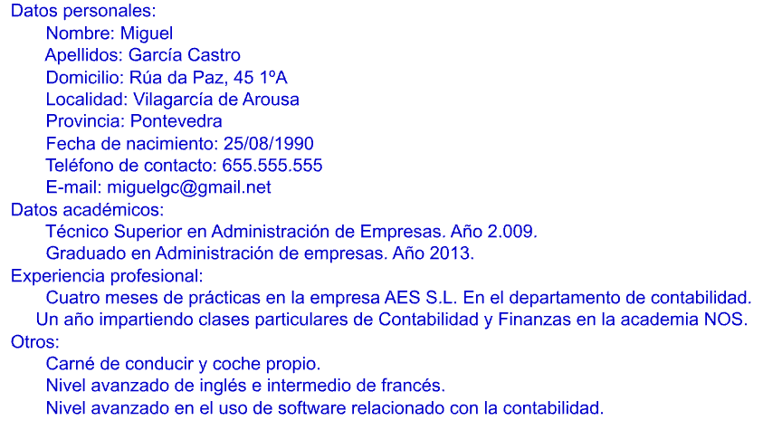
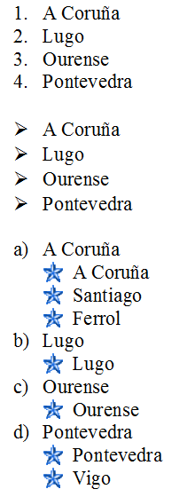
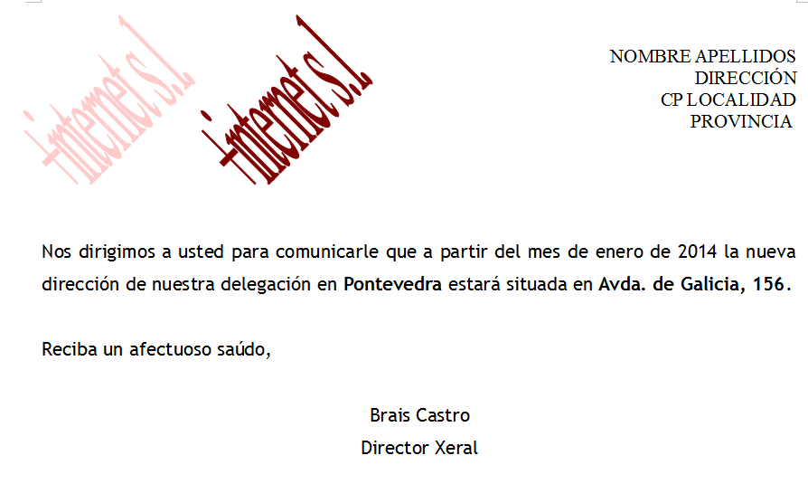

2. Exercicis d’escriptors¶
Aquesta secció consta de 30 exercicis en què aplicarem diversos continguts tractats en pràctiques guiades.
Creeu a l’ordinador una carpeta amb el vostre nom en què desarem els documents generats.
Índex de contingut:
- Exercici 1: Format de fitxer
- Exercici 2: Format de text
- Exercici 3: Subscripcions i Superince
- Exercici 4: Format de paràgraf
- Exercici 5: comentaris
- Exercici 6: Format i formes de pàgina
- Exercici 7: corrector
- Exercici 8: columnes
- Exercici 9: Stick especial
- Exercici 10: Imatges i hibernlaques
- Exercici 11: Currículum
- Exercici 12: capçalera i peu de pàgina
- Exercici 13: Notes de peu i al final
- Exercici 14: tabuladors
- Exercici 15: cerca i substituïu
- Exercici 16: Número i Viñetas
- Exercici 17: Taules
- Exercici 18: Taules (II)
- Exercici 19: filtres d’imatges
- Exercici 20: seccions
- Exercici 21: Índex
- Exercici 22: coberta
- Exercici 23: Converteix la taula en text
- Exercici 24: protegir un document
- Exercici 25: Forma
- Exercici 26: Forma (II)
- Exercici 27: Forma (iii)
- Exercici 28: caràcters i fórmules especials
- Exercici 29: Combina la correspondència
- Exercici 30: Combina la correspondència (II)
- Crèdits
Exercici 1: Format de fitxer¶
Obriu el Exercici_01.odt i protegeix-lo en format **. Doc **, **. DOCX ** i exporteu -lo en format **. Pdf ** de manera que obtingueu els fitxers següents:
- Exercici_01_namer.doc
- Exercici_01_namer.docx
- Exercici_01_namer.pdf
Exercici 2: Format de text¶
Obriu el `Exercici_01.odt
Deseu el fitxer resultant com a ** "Exercici_02_nombrerealumno.odt " **.

Exercici 3: Subscripcions i Superince¶
En un nou document, escriviu el text següent en format Arial, mida 16. Doneu als subscripcions una mida relativa del 75% i a les enquestes del 58%.
Deseu el fitxer resultant com a ** "Exercici_03_nombrerealumno.odt " **.

Exercici 4: Format de paràgraf¶
El Exercici_04.odt conté quatre paràgrafs. Doneu a cada paràgraf el format indicat a la vostra declaració.
També haureu d’utilitzar el Exercici_04.jpg
Deseu el fitxer resultant com a ** "Exercici_04_nombrerealumno.odt " **.
Exercici 5: comentaris¶
Obriu el document que heu creat l'any anterior ** "Exercici_04_name.dt " ** i afegiu els comentaris següents:
- Al paràgraf 1: "Canvieu la font Arial per Verdana ".
- Al paràgraf 2: "Aquesta imatge de fons s'ha d'eliminar i posar un color ".
Deseu el fitxer resultant com a ** "Exercici_05_nombrerealumno.odt " **.
Exercici 6: Format i formes de pàgina¶
Obriu un document nou, doneu -li la mida A4 i ** Orientació horitzontal **. Poseu ** vores ** i un ** color de fons ** a la pàgina (utilitzeu els valors que vulgueu).
Introduïu ** Cinc formes ** de la barra d’eines de dibuix de diferents categories. Diferents formats als formularis (farcit, línia, extrusió, ...) i en un d'ells escriu el nom ** i el cognom **.
Deseu el fitxer resultant com a ** "Exercici_06_NOMBREALUMNO.ODT " **.
Exercici 7: corrector¶
Al document `` 07.odt <../_ static/tutorial-writer/escriptor/cas/exercici_07.odt>`__ Hi ha tres errors d’ortografia. Utilitzeu l'ortografia ** ortografia i gramàtica ** per corregir -les.
Seleccioneu les paraules corregides i canvieu el seu format a la mida negreta 14.
Deseu el fitxer resultant com a ** "Exercici_07_nombrerealumno.odt " **.
Exercici 8: columnes¶
Obriu el fitxer corregit de l'exercici anterior. Distribuïu el text en columnes amb les següents característiques:
- ** Primer paràgraf: ** Dues columnes de la mateixa amplada, espaiades 1 cm amb una línia de separació d’1 punt d’amplada i verd.
- ** Segon paràgraf: ** Dues columnes, la de l'esquerra de 5 cm d'ample i la de la dreta d'11,50 cm amb un espai entre 0,50 cm.
- ** Tercer paràgraf: ** Tres columnes d’amplada igual amb un espai entre 0,30 cm.
Mantingueu el fitxer resultant com a ** "Exercici_08_NOMBREALUMNO.ODT " **.
Exercici 9: Stick especial¶
Busqueu informació sobre Wikipedia sobre un escriptor o escriptor que us agradi. Utilitzant la part de còpia "especial enganxada" del contingut de Wikipedia en un nou document de text, sense fer front a hiperenllaços ni el format original.
Deseu el fitxer resultant com a ** "Exercici_09_NOMBREALUMNO.ODT " **.
Exercici 10: Imatges i hibernlaques¶
Obriu el document de text de l'any anterior. La ** Fotografia ** de l'escriptor o escriptor que ha buscat a la Viquipèdia i la col·loca a la part superior dreta de la primera pàgina.
Al final del document introdueix un formulari ** "Arrow a la dreta " ** de la barra d'eines de dibuix i introdueix un hiperenllaç al lloc web des del qual heu obtingut la informació.
Deseu el fitxer resultant com a ** "Exercici_10_NOMBREALUMNO.ODT " **.
Exercici 11: Currículum¶
Heu estat el responsable d’escriure el currículum d’una persona.
Les vostres dades són:

Inseriu la imatge Exercici_11.jpg al currículum.
El disseny serà gratuït. Utilitzeu els formats de text i paràgraf que vulgueu.
Deseu el fitxer resultant com a ** "Exercici_11_nombrerealumno.odt " **.
Exercici 12: capçalera i peu de pàgina¶
Obriu el document de text Exercici_12.odt. Inseriu a totes les seves pàgines la capçalera següent: ** "Preàmbul de la llei orgànica 2/2006, del 3 de maig, de l'educació " **.
Canvieu el format d'aquesta capçalera a Arial, mida 9, estil italic i alineació dreta.
Inseriu al peu de la pàgina ** "Pàgina x de y " ** on x serà el camp ** "Número de pàgina " ** e i serà el camp ** "Pàgines totals " **.
Deseu el fitxer resultant com a ** "Exercici_12_nombrerealumno.odt " **.
Exercici 13: Notes de peu i al final¶
Obriu el document que heu creat l'any anterior.
Al final del primer paràgraf, escriviu la nota de pàgina següent: ** "Boe 4 de maig de 2006 " **.
Al final del segon paràgraf, escriviu la nota de pàgina següent: ** "Podeu accedir al Boe fent clic aquí " **. A la paraula "aquí " insereix un hiperenllaç al lloc web: ** "www.boe.es " **.
Deseu el fitxer resultant com a ** "Exercici_13_nombrerealumno.odt " **.
Exercici 14: tabuladors¶
En un nou document crea tabuladors en posicions:
- 1 cm
- 5 cm
- 12 cm
- 20 cm
Amb el contingut alineat a l’esquerra.
Si premeu la tecla TAB introdueix els camps següents:
- Nom
- Localitat
- Correu electrònic
- Envellir
A continuació, modifica els tabuladors perquè estiguin separats per punts.
Escriviu les dades inventades de cinc persones.
Deseu el fitxer resultant com a ** "Exercici_14_nombrerealumno.odt " **.
Exercici 15: cerca i substituïu¶
Obriu el Exercici_15.odt.
Amb l'eina ** "Cerca i substituïu " ** busqueu tots els termes "Galicia " del document i substituïu el seu format actual per les següents:
- Font: Arial
- Mida: 16
- Estil: atrevit
- Color: Blau
Deseu el fitxer resultant com a ** "Exercici_15_nombrerealumno.odt " **.
Exercici 16: Número i Viñetas¶
Escriviu el nom de les quatre províncies Galician en un nou document.
Copieu i enganxeu la llista dues vegades i utilitzeu els "Numeració i vinyetes " per obtenir un resultat com la imatge següent:

Deseu el fitxer resultant com a ** "Exercici_16_NOMBREALUMNO.ODT " **.
Exercici 17: Taules¶
Creeu una taula com la imatge següent en un document nou. Podeu utilitzar altres formats de text i colors de fons.

Deseu el fitxer resultant com a ** "Exercici_17_nombrerealumno.odt " **.
Exercici 18: Taules (II)¶
Creeu una taula amb la vostra programació de classes en un document nou. Utilitzeu els formats que vulgueu.
Mantingueu el fitxer resultant com ** "Exercici_18_NOMBREALUMNO.ODT " **.
Exercici 19: filtres d’imatges¶
Creeu una taula de dos i dues columnes. A cadascuna de les cel·les inseriu la imatge `` 04.jpg.
Horitzontalment i verticalment els centren i s’apliquen a cadascun d’un filtre diferent.
Deseu el fitxer resultant com a ** "Exercici_19_NOMBREALUMNO.ODT " **.
Exercici 20: seccions¶
Obriu el document Exercici_20.odt.
El document consta de sis seccions. Inseriu salts de pàgina de manera que cada secció només ocupi una pàgina.
A continuació, inseriu sis seccions i, apliqueu un format de pàgina (orientació, color de fons, vores, etc.) diferent de la resta.
Deseu el fitxer resultant com ** "Exercici_20_namerumno.odt " **.
Exercici 21: Índex¶
Obriu el fitxer ** "Exercici_20_namer.
Deseu el fitxer resultant com a ** "Exercici_21_namerumno.odt " **.
Exercici 22: coberta¶
Obriu el fitxer ** "Exercici_21_namer. En ell, inseriu un ** " fontwork "** amb el text: ** " perifèrics de l'ordinador "**. Afegiu el vostre nom ** i cognom **.
Deseu el fitxer resultant com a ** "Exercici_22_nombrerealumno.odt " **.
Exercici 23: Converteix la taula en text¶
Obriu el document Exercici_23.odt.
Convertiu la taula en un text mitjançant el punt i mengeu com a separador.
Deseu el fitxer resultant com a ** "Exercici_23_nombrerealumno.odt " **.
Exercici 24: protegir un document¶
Obriu el fitxer ** "Exercici_23_namer.odt " ** que heu creat l'any anterior.
Guardeu -ho com ** "Exercici_24_namer.odt " ** protegit amb contrasenya ** 12345 **.
Exercici 25: Forma¶
Imagineu -vos que un equip esportiu de la vostra ciutat (futbol, bàsquet, ...) té cura d’un formulari per recollir les dades dels nous socis.
Creeu un formulari que inclogui una imatge de l’equip de l’equip i diversos camps amb les dades personals dels socis (nom, cognom, adreça, telèfon, etc.).
Introduïu tres botons d’opció per al pagament de la quota:
- Mensual
- Trimestral
- Anual
Els socis només poden marcar una de les tres opcions.
Deseu el fitxer resultant com a ** "Exercici_25_nombrerealumno.odt " **.
Exercici 26: Forma (II)¶
Obriu el fitxer ** "Exercici_25_namer.odt " ** que vau crear l'any anterior.
Protegeix amb la contrasenya ** 12345 ** Totes les parts del formulari, excepte els camps que han de ser coberts pels socis.
Mantingueu el fitxer resultant com a ** "Exercici_26_nombrerealumno.odt " **.
Exercici 27: Forma (iii)¶
Obriu el fitxer ** "Exercici_26_namer.
Genera un PDF perquè els socis puguin omplir -lo i imprimir -lo.
Deseu el fitxer resultant com a ** "Exercici_27_nombrerealumno.pdf " **.
Exercici 28: caràcters i fórmules especials¶
Inserir caràcters especials i utilitzar la fórmula assistent escriu en un nou document Les fórmules següents:

Deseu el fitxer resultant com a ** "Exercici_28_nombrerealumno.odt " **.
Exercici 29: Combina la correspondència¶
Creeu un document de text que contingui una carta similar a la de la imatge següent, dirigida a tots els clients que figuren al full de càlcul `Exercici
Utilitzeu els formats de tipus de lletra, el text, el paràgraf i la pàgina que vulgueu.

Deseu el fitxer resultant com a ** "Exercici_29_NOMBREALUMNO.ODT " **.
Exercici 30: Combina la correspondència (II)¶
Creeu un document de text que contingui la mateixa carta que l'any anterior, però que només es dirigeixi als clients de la província de Pontevedra.
Deseu el fitxer resultant com a ** "Exercici_30_nombrerealumno.odt " **.
Crèdits¶
Autor dels exercicis originals: José Manuel Blanco Guimarey
Llicència: `Creative Commons By-NC-S
Font: Exercicis proposats
Crèdits tutorials: crèdits